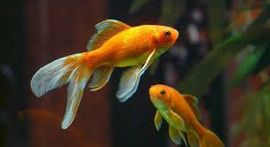
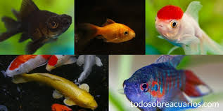
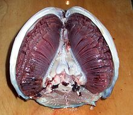

Peces
Definicion

Los peces (en latín pisces) son animales vertebrados primariamente acuáticos, generalmente ectotérmicos
(regulan su temperatura a partir del medio ambiente) y con respiración por branquias. Suelen estar
recubiertos por escamas, y están dotados de aletas, que permiten su movimiento continuo en los medios
acuáticos, y branquias, con las que captan el oxígeno disuelto en el agua. El grupo Pisces no es un taxón
porque sería parafilético. Los peces son abundantes tanto en agua salada como en agua dulce, pudiéndose
encontrar especies desde los arroyos de montaña (por ejemplo, el gobio), así como en lo más profundo del
océano (por ejemplo, anguilas tragonas).
Los alimentos preparados con pescado son una importante fuente de alimentación para los seres humanos.
Pueden ser grandes partir de ejemplares silvestres, o criados de manera similar al ganado. Hoy en día
la llamada pesca deportiva cada día se vuelve una actividad más popular. Los peces han tenido un papel
importante en muchas culturas a través de la historia, que van desde las deidades religiosas a temas de
libros y películas.
Clasificacion

El grupo de los peces es parafilético y se define como todos los vertebrados que no son tetrápodos, es decir,
por la exclusión de un taxón (los tetrápodos) de otro mayor (los vertebrados), y no por la posesión de
características derivadas comunes (apomorfías). Las especies hoy existentes pertenecen a tres grupos (a veces
considerados clases, a veces superclases):
• Agnatos o peces sin mandíbulas, que incluye unas pocas especies actuales (lampreas y mixines). Es un
grupo parafilético.
• Condrictios o peces cartilaginosos, que incluyen a tiburones, rayas y quimeras, caracterizados por poseer
hendiduras branquiales externamente visibles y un esqueleto compuesto sólo de cartílago. Son un grupo de vertebrados
muy basales, pero muy exitosos evolutivamente, ya que los tiburones son animales antiquísimos que no han cambiado
mucho desde su origen.
• Osteictios o peces óseos, con esqueleto óseo y branquias protegidas mediante un opérculo. Es un grupo
parafilético. A su vez se subdividen en:
• Actinopterigios, peces óseos con aletas provistas de radios.
• Sarcopterigios, peces óseos con aletas lobuladas. Son el grupo hermano de los tetrápodos (vertebrados provistos de
cuatro patas); los primeros anfibios se originaron a partir de sarcopterigios primitivos.
Anatomía
• Sistema Respiratorio: Los peces realizan la mayor parte del intercambio gaseoso mediante el uso de las branquias, que se encuentran hacia ambos lados de la faringe.
Las branquias están constituidas por estructuras filiformes denominadas filamentos branquiales. Cada uno de estos filamentos contienen capilares,
que permiten una gran superficie para el intercambio de oxígeno y dióxido de carbono. Este intercambio se produce cuando el pez aspira agua,
que pasa a través de las branquias.

Hay peces, como los tiburones y las lampreas, que poseen aberturas branquiales múltiples. Sin embargo, la mayoría de los peces poseen branquias protegidas por una cubierta ósea
llamada opérculo.
• Aparato Digestivo: Si bien todas las especies de peces poseen boca, no todas han desarrollado mandíbulas (ejemplo de esto son los agnatos). En el caso de las
especies que si desarrollaron mandíbulas, esto les permitió acceder a una variedad mucho más amplia de alimentos, incluyendo las plantas y otros organismos.
En los peces, al ser la comida ingerida a través de la boca, es desglosada en el estómago. Órganos como el hígado y el páncreas añaden enzimas digestivas. La absorción de nutrientes
se realiza a través del intestino.
• Sistema Locomotor: Con el fin de desplazarse de la mejor manera en el medio acuático (principalmente), los peces han desarrollado una serie de aletas, con diferentes
funciones, algunas de ellas son:
| Sistema locomotor |
| Nombre |
Descripcion |
| Aletas dorsales |
Ubicadas en la zona dorsal, su función principal es entregar estabilidad y maniobrabilidad. |
| Aleta caudal |
Ubicada en la cola, su función es impulsar el nado. |
| Aletas anales |
Ubicadas ventrales al ano, su función es estabilizadora. |
| Aletas pectorales |
Ubicadas detrás de las branquias, su función principal es estabilizar, aun cuando existen interesantes modificaciones de estas aletas (como en el caso del pez volador). |
| Aletas ventrales |
Ventrales a las aletas pectorales. |